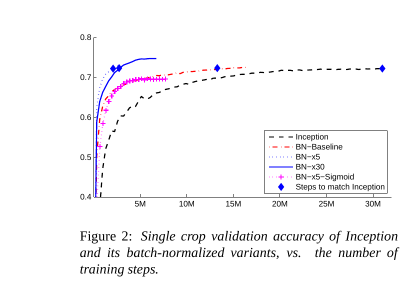
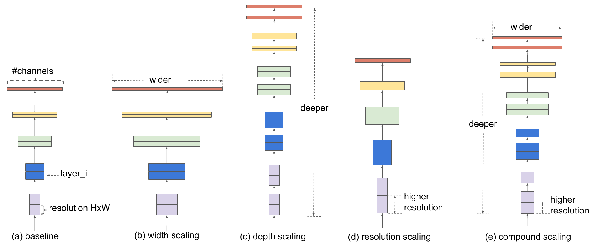
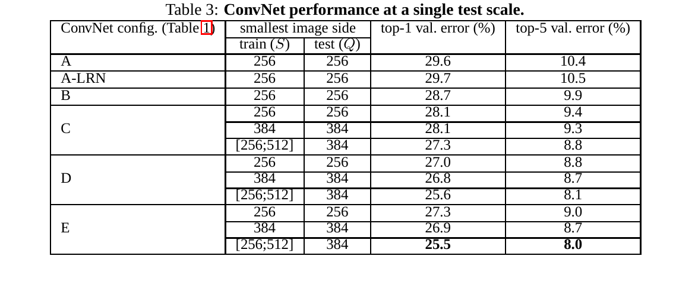

On this page
Here is the whole reason CNNs exist, in one comparison. A fully connected layer looking at a 224x224 RGB image needs over 150,000 weights for a single neuron. A 3x3 convolution kernel needs 27 weights, and it reuses those same 27 weights at every position in the image.
Same job, roughly 5,000x fewer weights. That reuse is called shared weights, and it is the whole trick: one pattern detector, stamped everywhere.
A convolution slides a small weight matrix, the kernel (or filter), over the input. At each position it computes a dot product between the kernel's weights and the local input patch it covers. The kernel learns to fire on things like edges and textures, and because the same kernel is applied to all spatial locations, it fires on those patterns wherever they appear. A vertical edge detector finds vertical edges in the top-left corner and in the bottom-right corner. No relearning per position.
Three things fall out of this. First, translation: a pattern shifted in the image still gets detected. Second, parameter efficiency: 27 weights instead of 150,528, as we just saw. Third, locality: each neuron only sees a small patch of the input, which matches how images work. Pixels far apart barely relate; pixels next to each other relate a lot. You can apply multiple kernels per layer to learn multiple features and channels.
Three knobs control a convolution layer. The kernel size is the patch the kernel sees; the larger the kernel, the more expensive it is computationally. Stride controls how far the kernel moves at each step. A larger stride results in fewer steps and acts as a form of downsampling. Padding inserts zeros around the input to preserve its size. Common types are valid (no padding), constant (a fixed number of zeros), and same (enough padding to keep the output size equal to the input size).
The output is how many kernel placements fit along the padded input. input size minus kernel size is the slack, how many extra slide positions the kernel gets; plus twice the padding adds slack on both sides; divide by the stride, floor it, and add 1 for the starting placement.
Let's take a look at how kernels are applied in a convolution layer using NumPy. We're sliding the kernel over the input, where i goes down the rows and j goes across the columns.
import numpy as np
def conv2d(input, kernel, stride=1, padding=0):
H_in, W_in = input.shape
K = kernel.shape[0] # Assume square kernel for simplicity
# Pad input
if padding > 0:
input = np.pad(input, ((padding, padding), (padding, padding)), mode='constant')
H_out = (input.shape[0] - K) // stride + 1
W_out = (input.shape[1] - K) // stride + 1
output = np.zeros((H_out, W_out))
for i in range(H_out): # Move down the rows
for j in range(W_out): # Move across the columns
i_start = i * stride
j_start = j * stride
patch = input[i_start:i_start + K, j_start:j_start + K]
output[i, j] = np.sum(patch * kernel)
return output
That's it. Multiply, add, move on. Nothing in this loop mixes channels or looks at distant pixels, which is exactly why conv layers are cheap and why they need stacking to see the big picture.
Okay, enough code. That loop is nine multiplies and an add, repeated until your eyes glaze over. Here is what it is actually doing. Pick a kernel. While the sweep runs, the bright column that appears on the right panel is the kernel shouting "I found my pattern" at every position along the bar. On the blur kernel the bar smears instead of spiking. That is the whole idea: one small pattern detector, stamped everywhere.
The same kernel fires wherever the pattern appears. That is translation equivariance. The input is a real-looking photo, but it is generated from the same 12x12 toy data, so the math is unchanged: the orange box is the 3x3 kernel window sliding over the photo. On the right, boxes mark where the kernel fires strongly: blue for a positive match, red for a negative one. Color scale: each kernel is normalized by its own strongest response over the whole map, so box intensity always means "fraction of this kernel's max".
How to play
3x3 kernel passes over the photo and multiplies-and-adds at every spot, so the same kernel fires wherever its pattern appears, no matter the position. That sweep is the convolution.
Now, consider this example: let's say you want a receptive field of 5, meaning each output cell can see a 5-wide patch of the input. You can get that with one 5x5 kernel layer. Or, you can get it with two 3x3 kernels with a stride and padding of 1. The two 3x3 kernels would actually have fewer parameters and can add more non-linearity, increasing expressiveness. A 5x5 has 25 weights; two 3x3s have 18, and you get a ReLU in between for free. For shallow models, a 5x5 might benefit from wide kernels, but even then, a dilated 3x3 can do the same task.
You have met the parts: kernels, ReLU, pooling. Here is the whole machine at once. One handwritten 7 goes in, six stages of a LeNet-style stack do their work, and ten scores come out.
$$y[i,j] = \max\left(0, \sum_{c,p,q} x[c][i+p][j+q] \cdot K[c][p][q] + b\right)$$ $$28 \to 24\ \text{5x5 conv},\quad 24 \to 12\ \text{\div 2 pool},\quad 12 \to 8\ \text{5x5 conv},\quad 8 \to 4\ \text{\div 2 pool},\quad \text{then } 256 \to 10\ \text{scores}$$
Here y[i,j] is one output cell; x[c][i+p][j+q] is the input patch under the kernel; K[c][p][q] are the kernel weights and b is the kernel's bias; Σ sums over every kernel position; max(0, ·) is ReLU, which deletes the negatives; i, j are the output row and column; c is the input map; p, q are the position inside the 5x5 kernel; and a ÷2 pool is a 2x2 max-pool, which halves each side. The second line is the stage sequence itself: input, conv, pool, conv, pool, then flatten to 256, and the flat numbers become ten digit scores.
A CNN turns a picture into smaller, richer maps, then into ten scores. The shrinking is the network deciding what matters.
A 28x28 handwritten 7. Everything the network knows starts here.
y[i,j] one output cell (blue = the maps you watch grow)x[c][i+p][j+q] the input patch under the kernelK[c][p][q] the kernel weights; b the kernel's biasΣc,p,q sum over every kernel position; · multiply; max(0, ·) ReLU, deletes the negatives; i, j output row and column; c input map; p, q position inside the 5×5 kernel→ the map size change that stage performs; ÷2 pool 2×2 max-pool halves each sideA simplified toy: the kernels and the final weights are fixed illustrations, not learned. The shapes and the shrinking are real; the patterns are staged.
How to play
28 to 4, count 1 to 16.The receptive field of a neuron is the region of the input image that can influence that neuron's value. How much of the original input does this neuron get to see? It determines how much context the model has. A small receptive field sees local details, like edges, while a large receptive field sees global structures, like shapes and objects.
With stride, you increase the spacing between the receptive fields of adjacent neurons, not the size of the receptive field itself; each step just jumps farther. Stride controls the resolution and indirectly spreads the influence of each neuron over a wider input area.
Padding lets the kernel reach the edge of the input. It doesn't directly impact the receptive field of a single layer. However, without padding the input shrinks. Padding preserves the size, so when more layers are stacked, the receptive field grows. It allows for deeper models without the input shrinking too fast.
Track two running numbers as you stack layers. The receptive field: how many raw input samples one output of the current layer can see. The jump: the effective step size, how far apart two neighboring outputs of the current layer sit, measured in raw input samples.
At the input itself, each step is one sample, so both numbers start at 1.
Why does dilation not change the jump? Dilation spreads the taps inside one kernel, but it does not move neighboring outputs apart from each other. Only stride does that: with stride s, the next output starts s steps later in the layer below, and each of those steps is one jump of the layer below wide.
The rule is simple: when a new kernel with k taps lands on the layer below, it adds the span between its first and last tap to the running total. That span is the gaps between the taps, each gap stretched wider by the dilation and by the previous layer's jump. The jump tells us how stretched the receptive field becomes. The more stride you use, the more your output is coarsely spread across the input.
3x3 stride-1 convolutions grows one neuron's receptive field by 2 pixels per layer: 3, then 5, then 7. With small kernels the receptive field grows linearly, so deep stacks are how you reach global context.
Take the kind of stack you'd see in the first block of a CIFAR model (CIFAR is the standard dataset of small 32×32 color images in 10 classes): conv 3x3 stride 1, conv 3x3 stride 1, maxpool 2x2 stride 2, conv 3x3 stride 1. Running the recurrence through it, a single layer-4 neuron ends up seeing a 10-pixel patch of the original input. Notice the pooling layer barely grew the receptive field itself, but it doubled the jump, and that stretched jump is what lets the final convolution reach 10.
Stride doesn't grow the receptive field directly; it stretches the jump, and the stretched jump grows everything after it.
Let us put the formula to work. Say sensory data comes in at 1kHz, and the activity you want to catch is about 300ms long. The model needs a receptive field of at least 300 samples. The chart below shows the same design: seven layers, the dilation doubling each layer, landing at 379 samples.
Here is the design in words: a plain conv with kernel size 7 first to lock in fine local detail, one stride-2 downsample early to halve the compute, then the dilation doubles each layer up to 16 and holds there for the last one. That final hold is what lands the total at exactly 379 samples; doubling once more to 32 would have pushed it to 507.
Seven small layers reach 379 samples, which at 1kHz is 379ms of context, past the 300ms target. Doubling the dilation roughly doubles each layer's new reach, so the receptive field grows exponentially while the parameter count stays flat. That is the whole appeal of dilated stacks.
In vanilla CNNs with small kernels, the receptive field grows linearly, and you might need dozens of layers to reach a large enough receptive field. Even if theory says the receptive field is large, in practice, most of the signal comes from a much smaller region. This is called the effective receptive field, and it's usually smaller and Gaussian-shaped. The center pixels matter far more than the edges. There are a number of techniques we can apply to make sure the receptive field grows fast.
Theoretical RF says every pixel in the window can influence the neuron. Technically true. Practically, the center pixels shout and the edge pixels whisper. This is the effective receptive field's bell curve, drawn. The heat bar is the 427 from the architecture table above. The lit part is what actually matters at your threshold. At a 50% threshold, very little of the bar survives: only the bright center stays lit.
$$\text{influence} = \exp\left(-\frac{d^2}{2\sigma^2}\right), \qquad \sigma = \frac{RF}{5}$$ $$\text{effective width} = 2\sigma \cdot \sqrt{2 \cdot \ln(1/t)}, \qquad \text{capped at } RF$$
Here RF is the theoretical receptive field from The receptive field: how much each neuron sees; σ (sigma) is the bell's width, set to one fifth of RF; d is a pixel's distance from the window's center; t is the threshold as a fraction of the peak height; and the effective width is the part of the window where the bell stands above t. The model is illustrative.
The check runs in three steps: take a network's theoretical window, draw the bell with its width set from that window, then cut the bell at the chosen threshold. The surviving middle part is the effective width.
The theoretical window is honest but generous. At a 50% threshold barely half of ResNet-50's 427 pixels do real work. The edges are the faint rim of a bell curve, not equally weighted vision.
How to play
16), VGG-16 (212), or ResNet-50 (427) pixels, all drawn on one true pixel scale. LeNet-style shows a 16-pixel sliver with the same bell curve squeezed inside it.5% to 60%, whole percent steps. The lit window shrinks as it rises; the readout gives the effective width in pixels and percent.
Dilation means inserting spaces between kernel elements when sliding over the input, so the kernel reaches further without increasing its size or parameter counts. Dilation is like using a "zoomed-out" kernel. A regular 3x3 kernel covers a 3x3 patch. If the dilation is 2, we're inserting 1 zero between each kernel element, so now it covers a 5x5 region even though the kernel is still 3x3.
Spread the taps apart and the kernel covers more ground without gaining a single parameter: the tap count stays the same, the gaps between the taps stretch wider with the dilation. The grid diagram below shows the dilation-4 version: 3 taps, a 9-sample span.
So a 3x3 kernel with dilation 2 behaves like a 5x5 kernel with 9 parameters instead of 25. Same 9 weights, wider reach: the span grows from 3 to 5. And the receptive-field rule from The receptive field: how much each neuron sees already stretches each gap by the dilation, so everything you just learned applies directly.
So, if dilation seems great, why not use it all the time? There's a limit to how far you can push it. This is called the gridding effect or blind spots. A large dilation causes the kernel to skip over much of the input. Some input positions are never touched by the neuron. The same is true for stride. Stride widens the spacing between sampled input positions, especially when combined with dilation, and can cause blind spots. It's important to use a stride of 1 in early layers to avoid this and periodically reset to a standard convolution to restore coverage.
An example of effective kernel coverage with a dilation of 4:
4 kernel with 3 taps touches input positions 0, 4, and 8 (blue) and skips everything between. Same 3 weights, a 9-sample span.
We're only looking at inputs 0, 4, and 8. If you stack another layer with the same dilation on top, it samples the sparse output at the same spacing: its receptive field covers just 5 of 17 positions, completely missing inputs like 1, 2, 3... They will never influence the output. Hence, you should always vary dilation across layers.
2 touch positions 0, 2, 4, 6, 8, leaving 1, 3, 5, 7 untouched (red). They will never influence the output. Vary dilation across layers, for example 1, 2, 4, so the coverage fills back in.So here is what I actually do in practice. Use smaller dilation in early layers so they densely cover the input, and do not dilate the first layer at all: the raw signal is where the fine detail lives, and a dilated first layer skips samples before the network has learned anything. That information is gone for good.
Another trick that works great is running several dilated convs in parallel, each with a different dilation rate, and fusing their outputs. That is what Atrous Spatial Pyramid Pooling (ASPP) does. The small-dilation branch catches fine local detail, the large-dilation branch catches the big semantic picture, and together they see multiple scales without adding depth.
Pooling is downsampling with training wheels off. Slide a window over the input, keep one statistic per window, throw away the rest. It learns nothing; it is hard-coded.
A regular convolution with a stride above 1 also causes downsampling, just like pooling. It is a learnable kernel versus hard-coded pooling, but it is not as translation-invariant, and it can cause aliasing if not tuned carefully.
Here is the arithmetic. At a sampling rate fs, any frequency content above half the sample rate (the Nyquist frequency) folds back into the lower band; that is aliasing. If you stride by 2 on a 1kHz signal, the effective sampling rate drops to 500 Hz and the new Nyquist is 250 Hz. Content above 250 Hz aliases unless the convolution filter itself low-passes first, and a learned filter is not guaranteed to do that. We typically low-pass filter to attenuate those high frequencies before downsampling.
Anti-aliasing kernels like BlurPool apply a fixed blur kernel before downsampling. The convolution gets a chance to extract features before the resolution drops, and the blur makes the layer more shift-invariant: shifting the input slightly barely changes the output.
CNNs can lose shift-invariance through strided convolution, max-pooling, and zero-padding, which adds artificial borders and causes asymmetry. Sometimes reflect or replicate padding beats zero-padding.
A 1x1 convolution is a linear layer applied to each pixel independently. It sees one pixel location at a time across all C_in input channels and applies the same weight matrix at every location: each row blends the input channels into one new output channel. No neighbors are consulted, so the spatial grid is untouched and only the channel mix changes. That is why it is called a pointwise operation.
A 1x1 conv neither mixes neighbors nor expands the receptive field; it only remixes channels. It often beats the equivalent matrix multiply on flattened inputs, because the conv engine keeps the spatial grid intact and shares weights across positions, while flattening destroys the grid.
A regular convolution mixes spatial information across channels. Each output channel is a weighted sum of all input channels. Depthwise convolution decouples this: it applies one filter per input channel independently, with no channel mixing. In PyTorch, if you set groups = in_channels, you get one filter per channel. Each channel gets its own kernel, and there is no mixing.
If depthwise convolution doesn't do channel mixing, what does? A pointwise convolution makes a great pair. And that's called depthwise separable convolution: first convolve each channel on its own, then mix channels with a 1x1. The depthwise convolution outputs one filtered map per input channel, and the pointwise convolution takes those maps and mixes across all channels with a 1x1 kernel to produce one map per output channel.
import torch.nn as nn
class SeparableConv2D(nn.Module):
def __init__(self, in_channels, out_channels, kernel_size, padding):
super().__init__()
self.depthwise = nn.Conv2d(in_channels, in_channels, kernel_size,
padding=padding, groups=in_channels, bias=False)
self.pointwise = nn.Conv2d(in_channels, out_channels, kernel_size=1, bias=False)
def forward(self, x):
x = self.depthwise(x)
x = self.pointwise(x)
return x
Count the parameters for 32 input channels, 64 output channels, and a 3x3 kernel: a standard conv needs about 18,000 weights, while the separable version needs about 2,300. Same spatial reach, about 8x fewer parameters. The depthwise toy opens on exactly these numbers.
Same spatial reach, fewer parameters, but where do they actually go? As the output channels grow, the standard bar explodes because every new output channel needs a full k by k kernel for every input channel. The separable bar shrugs: its depthwise part does not know C_out exists. At kernel 1 the separable bar loses. The trick only pays when the kernel has spatial extent.
$$\text{standard} = C_{out} \times C_{in} \times k \times k$$ $$\text{depthwise} = C_{in} \times k \times k$$ $$\text{pointwise} = C_{out} \times C_{in}$$ $$\text{separable total} = \text{depthwise} + \text{pointwise}$$
Here C_in is the input channel count, C_out is the output channel count, and k is the kernel side. The separable total is a sum because the two steps run one after the other, so their weights add. At kernel 1 the trick inverts, which is why nobody uses separable convolutions for 1x1 layers.
The asymmetry is the trick: the standard bar multiplies everything by the output channel count, the separable bar barely notices it.
How to play
1x1 where the trick loses.4 to 128. Both bars grow together, because input channels hit both methods the same way.4 to 256. The standard bar explodes while the separable bar barely moves.1x1, 3x3, 5x5, or 7x7. At 1x1, the separable bar loses; the readout gives the numbers.That's why every mobile architecture is built on this trick.
We haven't talked about a really important block that convolution layers tend to employ: batch normalization. BatchNorm normalizes the activation for each feature/channel across a batch, keeping the distribution stable during training. This typically helps with speeding up convergence, training deeper networks, and allowing higher learning rates. It computes one mean and variance over the batch and spatial dimensions for each channel, then scales and shifts the normalized activations with learnable parameters.
CNNs pass activations through many layers. Without normalization, the distribution of activations drifts, and later layers get unstable input. BatchNorm keeps the activations centered and scaled, making training smoother and more predictable. A typical convolution block has BatchNorm right after the convolution layer and before the activation function:
self.block = nn.Sequential(
nn.Conv2d(in_ch, out_ch, kernel_size=kernel_size, padding=padding, bias=False),
nn.BatchNorm2d(out_ch),
nn.ReLU(inplace=True),
nn.Dropout2d(p=dropout_prob)
)
Setup first: the race is ImageNet image classification. Inception and its batch-normalized variants all train on ImageNet's training set; the curves plot single-crop validation accuracy (each image judged from one center crop) against training steps.
BatchNorm's pitch was speed. I turned the paper's Figure 2 into a race. The dots ride the paper's real curves (the overlay paths are traced from the paper's vector figure file, not eyeballed from the image). The paper's claim: 14 times fewer steps.
$$\mu = \frac{1}{m}\sum_{i=1}^{m} x_i, \qquad \sigma^2 = \frac{1}{m}\sum_{i=1}^{m} (x_i - \mu)^2$$ $$\hat{x}_i = \frac{x_i - \mu}{\sqrt{\sigma^2 + \epsilon}}, \qquad y_i = \gamma \cdot \hat{x}_i + \beta$$
The steps run in order: mean, variance, normalize, then scale and shift. Here x is one activation and i picks out one value from the set being averaged, which holds m values in total; μ is the mean of that channel's activations over the batch and, for a convolutional layer, over the spatial positions too; σ² is the variance over the same set; ε is a small constant that keeps the division safe when the variance is near zero; and γ and β are the learnable scale and shift. At inference the batch statistics are replaced by running averages gathered during training, so one example alone still normalizes the same way.

Finish line: from the paper (Figure 3).
| Model | Steps to 72.2% | Max accuracy |
|---|---|---|
| Inception | 31.0M | 72.2% |
| BN-Baseline | 13.3M | 72.7% |
| BN-x5 | 2.1M | 73.0% |
| BN-x30 | 2.7M | 74.8% |
| BN-x5-Sigmoid | never reaches it | 69.8% |
Figure 3: steps to reach Inception's max accuracy (72.2%), and each network's max. (BN-x30's 74.8% comes after 6M steps, per the body text.)
The paper's learning-rate stress test makes the same point harder: at 5x the base learning rate, plain Inception dives off its curve while the batch normalized variant keeps rising; at 30x, plain Inception dies at the start and only the 30x batch normalized variant rises.
Learning-rate stress test. Same three learning rates the paper tried. Plain Inception is the fragile one.
How to play
72.2% far sooner than plain Inception across the paper's 0 to 31.0M steps, and it tolerates higher learning rates.1x, 5x, 30x. At 5x, plain Inception dives off its curve, leaving a red trail, while BN-x5 (gold ring) keeps rising; at 30x Inception dies on the first tick and only BN-x30 rises.Now let's talk about applying CNNs to temporal modeling: networks built this way are called TCNs (temporal convolutional networks). You can use Conv1D over time to model sequential dependencies. By applying a filter over the time dimension, it learns temporal patterns like motion, trends, and signal rhythms. Each output time step sees a small window of neighboring steps from the past or future. The ideas are the same as 2D, but time has a direction, and that changes a few decisions. You cannot peek into the future, your sampling rate is a hard physical fact, and the patterns you care about can be hundreds of milliseconds long.
In a causal task, you can't use future inputs to predict the current output. A standard Conv1D is non-causal. To fix this, you must control padding carefully.
For a kernel of size 3 where you want each output to depend only on the current and past inputs, you pad only on the left by the kernel size minus one. With dilation, the kernel reaches further back, so you pad that many zeros on the left. Causal padding means each prediction depends only on data up to its own time step.
If you use future sampling, you might get better performance on an offline batch than you would in real-time.
import torch.nn.functional as F
class CausalConv1d(nn.Module):
def __init__(self, in_ch, out_ch, kernel_size, dilation=1):
super().__init__()
self.pad = (kernel_size - 1) * dilation
self.conv = nn.Conv1d(
in_ch, out_ch, kernel_size=kernel_size,
padding=0, dilation=dilation
)
def forward(self, x):
# x: [B, C, T]
x = F.pad(x, (self.pad, 0)) # Pad left only
return self.conv(x)
The next step is to use dilation to allow for exponentially larger receptive fields with fewer layers, letting you capture long-term dependencies. Stack layers with the dilation doubling at each layer, and each layer doubles how far back you can see. With a kernel of size 3 and 8 doubling layers, one output sees 511 time steps. That is the exponential payoff of doubling dilation.
If dilation increases too fast, some intermediate time steps are skipped, and the TCN may miss finer-grained dependencies. Stacking blocks with repeated dilation cycles (1, 2, 4, 1, 2, 4...) can help. Same gridding warning as before, just in time.
TCNs also need residual connections to work reliably. With a deep stack of dilated convolutions, gradients can vanish. With a residual connection, the model learns modifications on top of the input. It's a shortcut that lets the input skip one or more layers.
class TCNBlock(nn.Module):
def __init__(self, in_ch, out_ch, kernel_size, dilation, dropout=0.2):
super().__init__()
self.conv1 = CausalConv1d(in_ch, out_ch, kernel_size, dilation)
self.relu1 = nn.ReLU()
self.drop1 = nn.Dropout(dropout)
self.conv2 = CausalConv1d(out_ch, out_ch, kernel_size, dilation)
self.relu2 = nn.ReLU()
self.drop2 = nn.Dropout(dropout)
# 1x1 conv to match dimensions if needed
self.downsample = nn.Conv1d(in_ch, out_ch, kernel_size=1) if in_ch != out_ch else nn.Identity()
def forward(self, x):
out = self.conv1(x)
out = self.relu1(out)
out = self.drop1(out)
out = self.conv2(out)
out = self.relu2(out)
out = self.drop2(out)
res = self.downsample(x)
return out + res
For multi-sensor data (like EEG, recordings of brain waves), you can first apply a Conv2D to extract temporal patterns shared across all channels. Treat the channels as the height, so the input is a channels-by-time grid, and a kernel spanning all channels covers the full channel set plus a temporal window. A 2D TCN is the same idea with dilation and causal padding applied across the temporal axis: the convolution slides across the grid causally, and stacking layers with increasing dilation expands the receptive field.
AlexNet made CNNs famous. It introduced ReLU, overlapping max-pooling, and made heavy use of strided convolution and pooling. With overlapping max-pooling, the goal was to reduce spatial resolution to make training feasible while keeping more information than non-overlapping pooling.
VGG is an architecture that stacks many 3x3 convolution layers with max-pooling to keep the receptive field large while extracting key features. This is the two-3x3s-beat-one-5x5 trick at scale: deep stacks of tiny kernels, each adding its non-linearity.
ResNet (Residual Network) uses skip connections to allow gradients to flow through very deep networks. Instead of learning the full transformation of the input, each block learns only the change to add: the output is the input plus a learned residual. It is often easier for the model to learn what needs to be added to the input than a full transformation of it. Some variants use a bottleneck block to reduce the number of channels before a 3x3 convolution and then expand it back to the original size with a 1x1 convolution.
MobileNet was designed for mobile and embedded devices. It introduced depthwise separable convolutions to drastically reduce parameters and compute. MobileNetV2 uses a clever twist on ResNet's skip connection called inverted residuals. Instead of shrinking, processing, and expanding, it expands, processes, and then shrinks. It also uses global average pooling instead of a fully-connected layer for classification.
EfficientNet is an extremely powerful CNN built on the ideas of ResNet and MobileNet, using neural architecture search and compound scaling to achieve state-of-the-art accuracy with an order of magnitude fewer parameters and FLOPs (floating-point operations, the standard count of the arithmetic a forward pass performs). It uses a block similar to MobileNetV2's but adds a Squeeze-and-Excitation (SE) block. The SE block provides channel-wise attention, allowing the network to reweigh each feature map based on its importance.
class SEBlock(nn.Module):
def __init__(self, channels, reduction=16):
super().__init__()
self.pool = nn.AdaptiveAvgPool2d(1) # -> [B, C, 1, 1]
self.fc = nn.Sequential(
nn.Linear(channels, channels // reduction),
nn.ReLU(),
nn.Linear(channels // reduction, channels),
nn.Sigmoid()
)
def forward(self, x):
B, C, H, W = x.shape
s = self.pool(x).view(B, C) # [B, C]
w = self.fc(s).view(B, C, 1, 1) # [B, C, 1, 1]
return x * w # Channel-wise scale
The SE block is placed inside the MBConv block (MobileNet's inverted bottleneck: expand, depthwise-filter, project), right after the depthwise convolution and before the final projection layer. It asks a simple question per channel: "how useful am I right now?", then scales the channel by the answer.
A bigger input image needs more layers to grow the receptive field and more channels to capture fine-grained patterns. Scale one dimension alone and you starve the others. That is the intuition behind the paper's compound scaling: grow depth, width, and resolution together, in a fixed ratio.
$$d = \alpha^{\varphi}, \qquad w = \beta^{\varphi}, \qquad r = \gamma^{\varphi}, \qquad \alpha \cdot \beta^2 \cdot \gamma^2 \approx 2, \qquad \alpha, \beta, \gamma \geq 1$$
Here d, w, and r are the depth, width, and resolution multipliers the dial produces; φ (phi) is the compound coefficient, the single dial that says how much more compute is available; α, β, and γ are fixed constants that split that budget among depth, width, and resolution. The constraint exists because a convolution's cost grows with depth once, but with width and resolution twice over, so the constraint keeps each step of φ at roughly double the FLOPs of the step before.
The paper finds those constants in two steps. Step 1: fix φ = 1 and run a small grid search on the baseline B0 for α, β, γ; the values it finds are α = 1.2, β = 1.1, γ = 1.15. Step 2: freeze those constants and raise φ to grow B0 into the B1 to B7 ladder.

Rebuilt from Figure 2 of Tan and Le (ICML 2019). arXiv:1905.11946
The setup behind these numbers: ImageNet image classification. Every model trains on ImageNet; the score is top-1 accuracy (how often the model's single best guess is right) and the cost is parameters and FLOPs, so a win means more accuracy for fewer params and flops.
From the paper (Table 2): the B0 to B7 ladder
| Model | Top-1 | Params | FLOPS |
|---|---|---|---|
| B0 | 77.1% | 5.3M | 0.39B |
| B1 | 79.1% | 7.8M | 0.70B |
| B2 | 80.1% | 9.2M | 1.0B |
| B3 | 81.6% | 12M | 1.8B |
| B4 | 82.9% | 19M | 4.2B |
| B5 | 83.6% | 30M | 9.9B |
| B6 | 84.0% | 43M | 19B |
| B7 | 84.3% | 66M | 37B |
All four at the same budget (compound scaling coefficient 3): each method grows a different network.
B7 matches the 84.3% top-1 of GPipe, a giant Google model trained by splitting it across many accelerators, with 8.4x fewer parameters (66M vs 557M).
B1 beats ResNet-152 at 7.6x smaller and 5.7x faster. Note: the paper's tables report B1 at 79.1% (Table 2) and 78.8% (Table 4); B7 at 84.3% (Table 2) and 84.4% (Table 4). B7 input is 600px as deployed, 596px by the paper's equation 3.
How to play
The design of CNNs can feel like trial and error. The Inception architecture's answer is: instead of picking one kernel size, let's compute multiple receptive fields in parallel and let the network figure out what matters. It has four branches:
1: A 1x1 convolution.2: A 1x1 convolution followed by a 3x3 convolution.3: A 1x1 convolution followed by a 5x5 convolution.4: A 3x3 max-pooling layer followed by a 1x1 convolution.
The channels from all branches are then concatenated. The 1x1 convolutions before the expensive 3x3 and 5x5 branches squeeze the channels down first, so the big kernels stay affordable. Inception also uses factorized convolutions (e.g., using two 3x3s instead of one 5x5). Newer versions combine Inception blocks with residual connections.
212 and 427 are not magic numbers. They are what you get when you run the recurrence from The receptive field: how much each neuron sees over the actual layer lists. The receptive-field animation in this section runs that recurrence over three real architectures: the window crawls through the 3x3s and then leaps every time a pool doubles the jump. That leap is the whole story: stride is what makes receptive fields explode. The 3x3s are just along for the ride.
$$\text{new RF} = \text{old RF} + (k - 1) \times \text{old jump}$$ $$\text{new jump} = \text{old jump} \times \text{stride}$$
Here k is the layer's kernel size, stride is how far the layer's outputs step, and jump is the spacing between neighboring outputs measured in input pixels. Both numbers start at 1 at the input.
| Architecture | Layer sequence | Layers | Final receptive field |
|---|---|---|---|
| LeNet-style | conv 5x5 stride 1, pool 2x2 stride 2, conv 5x5 stride 1, pool 2x2 stride 2 | 4 | 16 |
| VGG-16 | blocks of 2, 2, 3, 3, 3 conv 3x3, each block followed by pool 2x2 stride 2 | 18 | 212 |
| ResNet-50 | stem conv 7x7 stride 2, maxpool 3x3 stride 2, then stages of 3, 4, 6, 3 bottleneck blocks, each block a 1x1 pair with no RF growth plus one 3x3 whose stride is 2 on the first block of stages 2 to 4 and 1 otherwise | 34 | 427 |
VGG-16 lands exactly on the published 212, ResNet-50 on 427. Same recurrence you learned above, just run over real layer lists.
How to play
212 and ResNet's 427 come from.3x3 layers and leap at pooling or stride layers.4 layers), VGG-16 (18), or ResNet-50 (34). VGG-16 compares what the 3x3s add versus what the five pools add.
The VGG paper asked the bluntest question in deep learning: what happens if we just keep stacking layers? Same 3x3 convolutions, same max-pooling, just more of them. Config A has 11 weight layers. Config E has 19. Everything else is held fixed, so any change in error is the depth talking.
Below is the paper's actual Table 3, single-test-scale results. I turned its S=256/Q=256 column into a race (S is the training scale, Q the test scale: images resized so the shorter side measures 256 pixels). That tick-up is the whole lesson, and it is the paper's own conclusion, not my commentary: "The error rate of our architecture saturates when the depth reaches 19 layers."

The race below reads only the S=256/Q=256 column of that table: interactive data from Table 3, S=256/Q=256 column.
| Config | Weight layers | Params | Top-5 error at S=256/Q=256 |
|---|---|---|---|
| A | 11 | 133M | 10.4% |
| A-LRN | 11 | 133M | 10.5% |
| B | 13 | 133M | 9.9% |
| C | 16 | 134M | 9.3% |
| D | 16 | 138M | 8.8% |
| E | 19 | 144M | 9.0% |
Error falls from A to D, then ticks up at E. C and D have the same depth, but C mixes in 1x1 layers while D is pure 3x3, and D wins; A-LRN adds local response normalization and does not help.
$$3 \times (3 \times 3 \times C \times C) = 27C^2 \text{ weights}, \qquad 7 \times 7 \times C \times C = 49C^2 \text{ weights}$$
That is the paper's 3x3 argument: three stacked 3x3 layers hold 27C² weights and one 7x7 layer holds 49C², so the 7x7 costs 81% more for the same receptive field. Here C is the channel count, the same in and out, which is what makes the two counts comparable.
Why 3x3? The paper's param argument. Two stacked 3x3 layers see what a 5x5 sees. Three see what a 7x7 sees. But the 7x7 costs 81% more weights for the same reach. Plus the stack gets a ReLU after every layer, which the paper notes makes the decision function more discriminative.
How to play
19 layers, where it rises again: depth helps until it saturates.10.4% to 8.8%, but past saturation at config E the error is higher, at 9.0%.11), A-LRN (11), B (13), C (16), D (16), E (19) weight layers. At E: 19 layers, 144M params, 9.0% error.3x3 stack showing it covers exactly the 7x7's area, and highlights the param counts: the 7x7 needs 81% more weights. Same reach, 81% more weights.
Theory is nice, but let's ground it in numbers. A tiny LeNet-style CNN, two 5x5 convolution layers with pooling and a small classifier on top, has a few hundred thousand parameters. On MNIST, the handwritten-digit dataset, it hits about 99.2% test accuracy. That is not my run; it is the reference result from LeCun's original LeNet-5 paper, reproduced countless times since. The point stands: even a toy CNN solves MNIST, because the shared-weights trick buys you enormous data efficiency. Every digit, at every position, trains the same kernels.
The receptive field numbers are just as concrete. Computed from the architecture with the formula from The receptive field: how much each neuron sees, the theoretical receptive field of VGG-16 is 212 pixels and ResNet-50 is 427 pixels (Luo et al., 2016). These are published computed values, not guesses. And the caveat from earlier applies double here: most of that 427-pixel reach is the faint edge of the bell curve.
One more practical note. When your CNN underperforms, the receptive field is a good first suspect: if your objects are 100 pixels wide and your network's receptive field is 40, no amount of training fixes that. The model is too weak. You need a stronger model, or at least a deeper one.
This is the cheapest debugging step in computer vision and nobody does it. Before you tune anything, check the ruler: is your network's window bigger than your object? At 100 pixels, LeNet is red and VGG is green. No training run fixes red. That is the whole diagnosis, and it took ten seconds.
1.2 times the object, or exactly equals it.1.2 times it.
Here the window is the network's receptive field in pixels, 16, 212, and 427 for the three networks, and the object is the object's width in pixels.
The check runs in three steps: name your object size in pixels, name your network's window, then apply the rule above.
Both squares share one scale, so the comparison is honest. Green needs real margin: the window must cover 1.2 times the object. Exact fits get the benefit of the doubt; anything under the object is red.
How to play
10 to 500 px outgrows it.10 to 500 px. The badge flips at the boundary; green needs the window to cover 1.2x the object, and exact fits get the benefit of the doubt.16), VGG-16 (212), or ResNet-50 (427) pixels. LeNet-style turns the badge red by 50 px; ResNet-50 turns the same object green.